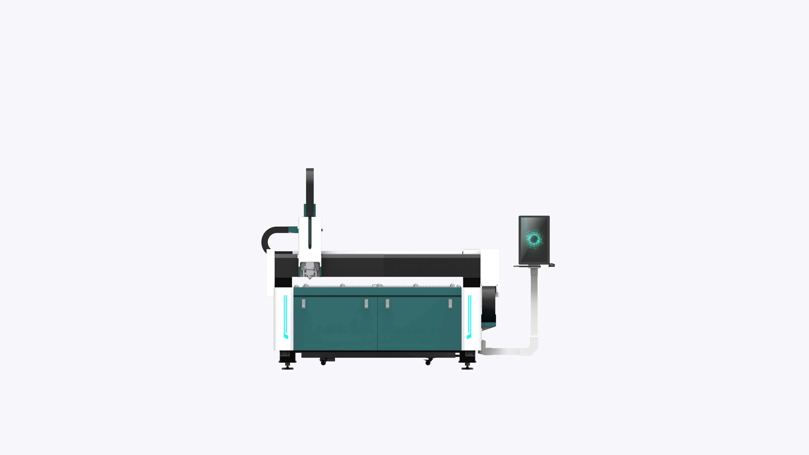

Senrytech A
Senrytech B
Senrytech B Plus
Senrytech B Pro
Senrytech B ProMax
Senrytech B Ultra
Senrytech C
Senrytech C Pro
Senrytech G
Senrytech M
Senrytech S
Senrytech A Plus
Senrytech A Pro
Weld H1 手持款
Weld A1 自动款
Clean X1 激光清洗机
Mark Z1 激光打标机
Senrytech L

3000W 以下首选，原厂核心件不缩水！为初创企业量身定制，1.0G 稳定加速 +±0.05mm 精度，把专业切割门槛打下来。
杜绝虚假宣传
灵活上门安装
提供专业安装人员，费用透明，按需定制安装流程，不用零散找技工。
按需上门维修
明码标价的上门维修，快速协调适配机型的技术人员，维修资源更匹配。
明确期质保
1 年质保覆盖 “非人为、非不当使用” 故障，减少意外成本。